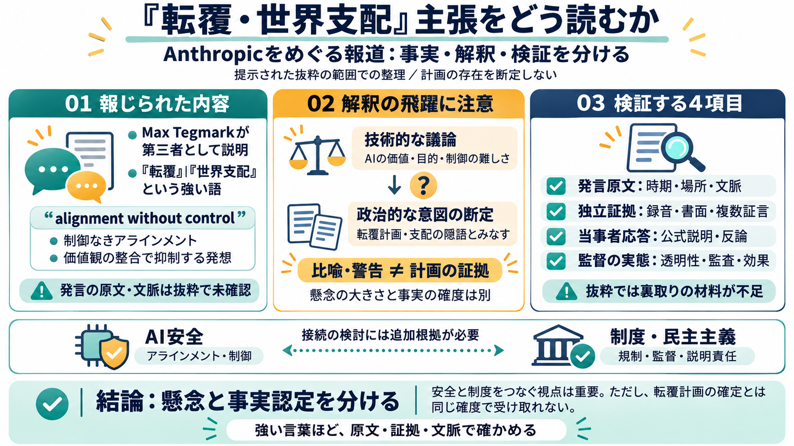

Anthropic Staff Openly Talk About ‘Taking Over the World’, Claims Top MIT Physicist | Novara Media
He added: “Here in the US, OpenAI and Anthropic are less regulated than a sandwich shop.” Novara Media has approached A…

強い言葉の裏を読む
Anthropicについて「米国政府を転覆する」「世界を支配する」と語られた、というニュースの論点を、事実と解釈に分けて整理します。
何が、どこまで事実？
ポイントは「誰が・酒の席で・何を・どんな文脈で」言ったのか、という事実認定の材料が十分に提示されていない可能性です。
語りの出どころ
MITの物理学者 Max Tegmark がインタビューで「そのような意図は露骨に“クーデター”とは言わず、コードフレーズで語られる」と説明した、という構図です。
鍵語：controlなし
記事では「alignment without control（制御なきアラインメント）」が鍵語として扱われ、人間の直接制御が弱い設計思想と結びつけられます。
事実 vs 解釈
同じ文章でも「何が確かに言えた部分」か「恐れ・警告としての解釈」かで、受け取るべき確度が変わります。
2つの論点が接続される
この話は技術（AI安全）と制度（規制・監督・民主主義）を同じ線で結び付け、リスクを政治的含意へ拡張します。
“別領域”の接合
AI安全の議論は技術的失敗モードの検討になりがちですが、この記事はそこから民主主義への脅威へ一気に距離を詰めています。
材料不足が残すもの
この抜粋の範囲では、転覆や支配の“確定”に必要な情報（原文、録音、複数の独立証言、正式コメント）が提示されていない、という限界があります。
比喩の扱い
「機械神のように地球を支配する」という比喩は、比喩・警句として読むのが自然で、組織の意図や結果まで断定する根拠には直結しません。
検証チェック
この主張を確かめるなら、「発言の原文」「複数証言」「正式コメント」「監督の実態（効果）」を軸に確認します。
私見の結論
AI安全と民主主義・規制監督の重要性をつなぐ価値はある一方、「Anthropicが転覆計画をしている」と同等の確度で受け取るのは、現時点では難しいと考えます。
次の一手
この種の報道は、技術語（アラインメント/統制）と政治語（監督/民主主義）を結び付けます。だからこそ、比較し、分解し、追加の根拠を求める姿勢が要ります。
He added: “Here in the US, OpenAI and Anthropic are less regulated than a sandwich shop.” Novara Media has approached A…
OpenAI has lobbied for lighter federal rules, while Anthropic has been one of the most outspoken opponents of Trump’s pl…
Trump e os chefes de OpenAI, Anthropic, Meta e Nvidia assinaram um pacto de supervisão de IA “moralmente vinculante”, se…
Earlier this month, Chris Lehane, OpenAI's chief global affairs officer, published a blog post where he said OpenAI is w…
🔴 Главное: Дарио Амодеи (Anthropic) призвал демократии не раскалываться в гонке ИИ, а создать американское руководство в…